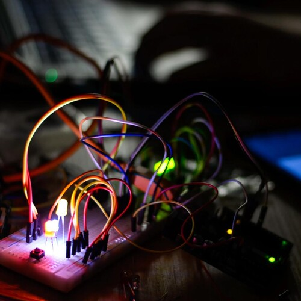

Oh Snap! or How Not To Read The Documentation

Oh Snap! or How Not To Read The Documentation
Umm, sitting here,
and Ohhhhh Dear.
I have destroyed two LED lights and I had to mellow,
as I killed a beautiful Green and Magical Yellow.
I was building my first electrical circuit thing,
and I wanted to _ssssimplify_ all the wiring.
I didn't know I _trully_ needed a resistor on the line,
but I was smart enough to pay attention to the plus sign.
It was in the blood flowing through my veins,
to know the longer leg marked all the electron gains.
And you know, it glowed for a little bit,
it made me think I made it.
But then darkness came,
as the little LED died, _currrrsing_ my name.
My third light is still glowwwwwwing,
and now I can sense the electrons cheerfully flowing.
But, shoot, I don't actually know how to calculate the needed resistor yet,
I am kind of waiting for my third LED to get upset.
I am poking the resistor I did plug in there with my finger, hoping not to make it pop, or yeet,
well, I know that the electrons it stops turn to heat.
I could increase the voltage to 5,
but I expect the LED won't survive.
But you know what, I love it, I love it so deeply,
and the whole thing was just 11 dollars[1] - I bought it very cheaply.
Even thought my LED is not very bright,
it is not dim as I am, about the source of my glowing delight.
I _know_ I used the wrong resistor number,
but it has not fallen yet to that perpetual dark slumber.
I poked the resistor to run another test,
I didn't get shocked, I must say I am impressed.
Gosh, I am impressed with my new curiosity,
even though the circuit I created is only little short of atrocity.
I learned something from the way my resistors are numbered,
R is the same as Ω, as you can't type Ω without being encumbered.
I also have an 1 "M" resistor packet,
that puts it the 1,000,000 Ω resistor bracket.
Even though I don't have an engineering degree,
I keep admiring at my beauuuuutiful and dangerous LED.
I just tried a 10 Ω resistor and I think the LED seemed somewhat brighter,
but it didn't burn out, I think this one is a real fighter.
Dangerously, I tried a 100, 220, and 330 Ω,
even though I am sitting here all lonely at home.
But I am OK,
I did finally get it noticeably dimmer and made my day.
Yeah, 51,000 Ω and the electrons didn't like that at all,
it certainly looked like they were hitting a wall.
But we do have a huge problem, here to my favorite subject we turn,
because messing with wires is how you _really_ learn.
I didn't calculate the Ω I needed on purpose _and_ frankly, out of spite,
because learning formula-first is stupid, it is real blight.
Once you burn out your LED,
and figure out that a resistor will set you free.
You whip the resistors out on the table,
and frankly _ignore_ the gosh darned label.
You just go in a sequence and play like Maxwell[2] did,
_you want to notice_ the external properties like a curious kid.
You have to get stuck,
and then set yourself free and run amok.
Just use a battery, so that you don't end up being permanently blocked,
by getting horribly shocked.
Remember, at first, try it all by yourself,
at first _leave_, all the books on the shelf[3].
You are just as much of an inventor as all the greats were,
you should absolutely become an entrepreneur.
You genius _needs_ you, so without any further adieu,
get yourself a multimeter[4] too.
(bonus: Free Phone Ring[5] featuring the hoots of The Midnight Owl[6])
Oh Snap! or How Not To Read The Documentation References
[1]: https://www.amazon.com/gp/product/B01IH4VJRI/ref=ppx_yo_dt_b_asin_image_o00_s00?ie=UTF8&psc=1
[2]: https://en.wikipedia.org/wiki/James_Clerk_Maxwell
[3]: https://www.youtube.com/watch?v=EeCh68a1GEg
[4]: https://www.amazon.com/gp/product/B00066ZZO4/ref=ppx_yo_dt_b_asin_title_o00_s00?ie=UTF8&psc=1
[5]: /audio/bonus-phone-ring.mp3
[6]: https://catpea.com/read/furkies-purrkies/220.html